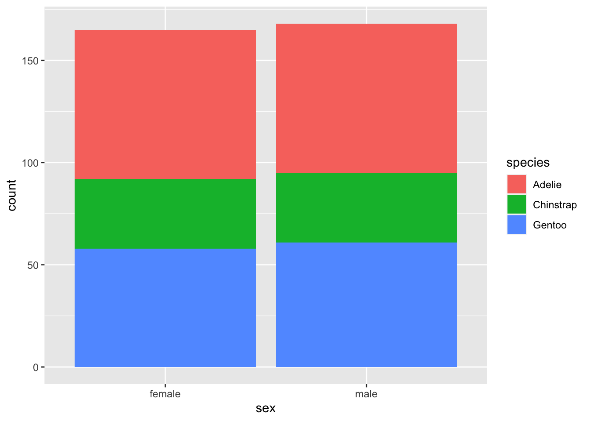

ggplot2
This is a brief introduction. For more in depth examples and solutions, check out ggplot2: Elegant Graphics for Data Analysis by Hadley Wickham, Danielle Navarro, and Thomas Lin Pedersen.
ggplot() is based on a grammar graphics – a way of
approaching describing the construction of a graphic from common
building blocks. Building a graphic with ggplot then follows some common
patterns of construction.
At its most basic, we supply ggplot with a data set and some aesthetics to map – that is, the variables we wish to display on the plot and how they should appear. We then define a plot type.
Step by step this looks like
- call ggplot()
- provide ggplot with a data set
- provide ggplot with the variables of interest and their aesthetic properties
- define a plot type with geom_plotType()
After this, we continue to add on layers. We can add on additional
geoms, we can add on scale adjustments, statistical
summaries etc. and finally we can adjust how the overall presentation
looks, adjusting titles, labels, legends etc. The general form of this
is something like:
ggplot() + # call ggplot and potentially feed in data and variables to plot to specific aesthetics
geom() + # pick a plot type. Data and variables to plot to specific aesthetics can also be assigned here
scale() + # make adjustments to the scales
labs() + # customize labels
... + # there are other options!
theme() # add some styleLevels of Measurement & Data Types
We should briefly discuss levels of measurement. A common taxonomy breaks values into four levels:
| Level | Order | Description | Example | General Note |
|---|---|---|---|---|
| Nominal | N | Classifies | Marital status | Pick a category |
| Ordinal | Y | Classifies, > < comparisons | Education | Pick a preference |
| Interval | Y | Difference, - + comparisons | Number of people | Count something |
| Ratio | Y | Magnitude, x / comparisons | Height | Measure something |
Not all visuals are appropriate for all levels. As a consequence, the
options available to the various geoms that define the plot
type will differ.
Reflecting back on our earlier discussion of data types in R, nominal and ordinal data are generally categorical or ‘factor’, interval will be classified as integers, and ratio will be classified as double. If our data types are not properly assigned, R will generally try to ‘coerce’ the data type to something that will work, but this isn’t always successful, nor is very good practice to make the system guess!
Get Some Data
First we get some data
install.packages("palmerpenguins")
library(palmerpenguins)And of course, check out the data
str(penguins)## tibble [344 × 8] (S3: tbl_df/tbl/data.frame)
## $ species : Factor w/ 3 levels "Adelie","Chinstrap",..: 1 1 1 1 1 1 1 1 1 1 ...
## $ island : Factor w/ 3 levels "Biscoe","Dream",..: 3 3 3 3 3 3 3 3 3 3 ...
## $ bill_length_mm : num [1:344] 39.1 39.5 40.3 NA 36.7 39.3 38.9 39.2 34.1 42 ...
## $ bill_depth_mm : num [1:344] 18.7 17.4 18 NA 19.3 20.6 17.8 19.6 18.1 20.2 ...
## $ flipper_length_mm: int [1:344] 181 186 195 NA 193 190 181 195 193 190 ...
## $ body_mass_g : int [1:344] 3750 3800 3250 NA 3450 3650 3625 4675 3475 4250 ...
## $ sex : Factor w/ 2 levels "female","male": 2 1 1 NA 1 2 1 2 NA NA ...
## $ year : int [1:344] 2007 2007 2007 2007 2007 2007 2007 2007 2007 2007 ...The penguins data structure is a tibble. A tibble is
very much like a data frame. It is not part of base R, but is introduced
through Tidyverse, of which ggplot2 is one piece.
And optionally, view the data
View(penguins)The Basic Graph
Following on the above, first we call ggplot and define our data set:
ggplot(data = penguins)
An blank slate is prepared for us! Next, we add in the variables we want mapped.
ggplot(data = penguins, aes(x = bill_length_mm, y = flipper_length_mm))
This sets us up with a blank grid with x and y axis ticks corresponding to your variable values and x and y axis labels corresponding to your variables.
Now we call a plot type to represent our data, in this case, a scatter plot
ggplot(data = penguins, aes(x = bill_length_mm, y = flipper_length_mm)) +
geom_point()
There are several geoms_ that we can choose from. These
include:
- geom_bar() and geom_col() for bar charts
- geom_boxplot() for box and whisker plots
- geom_density() for density plots
- geom_freqpoly(), geom_histogram(), geom_violin(), and geom_dotplot for distributions
- geom_line() for connecting observations
- geom_point() and geom_jitter() for scatter plots
- geom_map() and geom_sf() for GIS data
There are more…
There are many aesthetics that we can map to aes() and
each geom_ will accept different aesthetics. You can review
available aesthetics using the help pages. Those aesthetics in
bold are required.
Using the above as a model, use geom_jitter() to plot
flipper_length_mm against species.
ggplot(data = penguins, aes(x = species, y = flipper_length_mm)) +
geom_jitter()
A Basic Bar Graph
We’ll now plot a bar plot, which only maps one variable as the other variable is simply a count of observations, which is computed as part of the process of generating the graph.
ggplot(data = penguins, aes(x = sex)) +
geom_bar()If we already had the count data, we would use
geom_col(), but then we need to provide the y aesthetic. R
provides an easy way to get a frequency table with the function
table():
(sex_freqtable <- table(penguins$sex))##
## female male
## 165 168NA values are dropped by default.
We can’t plot a table. To be able to plot this, we need to convert the table into a data frame.
Use geom_col() to plot sex_freqtable. A
plain language articulation of the process would read something
like:
- convert
sex_freqtableto a dataframe - figure out the variable names in the dataframe that is created
- call ggplot, feed it the data frame and the variables to be plotted
- add
geom_col()
sex_freqtable_df <- as.data.frame(sex_freqtable) # convert to data frame
str(sex_freqtable_df) # pull up the struture
ggplot(data = sex_freqtable_df, aes(x = Var1, y = Freq)) +
geom_col()Additional Aesthetics
Beyond articulating the variables on the x and y plane, we can also articulate variables according to other aesthetics properties, such as colour and size.
Using a bar plot
ggplot(data = penguins, aes(x = sex, fill = species)) +
geom_bar()Let’s get rid of those NA values. ggplot allows us to
subset.
ggplot(data = subset(penguins, !is.na(sex)), aes(x = sex, fill = species)) +
geom_bar()
Using our jitter plot
ggplot(data = penguins, aes(x = species, y = flipper_length_mm, colour = island)) +
geom_jitter()
Using the penguins data set, use geom_point() to plot
flipper_length_mm against bill_length_mm only
for those instances where the variable sex is not
NA, and map the aesthetic size to the variable
sex.
A plain language summary might read:
- call ggplot
- feed it the penguins data set subsetted to remove
NAvalues from the variablesex - map the variable
bill_length_mmto the x axis,flipper_length_mmto the y axis, andsexto size - call
geom_point()
ggplot(data = subset(penguins, !is.na(sex)), aes(x = bill_length_mm, y = flipper_length_mm, size = sex)) +
geom_point()You should get a warning that reads
Using size for a discrete variable is not advised. This is
valid. Size comparisons are one of magnitude while the sex
variable represents two discrete, non-ordinal categories. The graph can
be produced, but that doesn’t mean it’s a good graph for the data.
It would be more appropriate to use colour to distinguish between a non-ordinal, categorical variable and to use size for something like body mass.
ggplot(data = subset(penguins,!is.na(sex)),
aes(x = bill_length_mm,
y = flipper_length_mm,
colour = sex,
size = body_mass_g)) +
geom_point()Things get a little hard to see here though!
To keep things legible in our code, you may wish to use a line break at the end of each argument.
Scales
Our scales can be adjusted in many different ways, for example, changing the colour, fill, alpha, x, or y scales.
alpha controls opacity and is on a scale of 0 to 1, with
0 being transparent and 1 being solid. Like jitter, this helps us to see
overlapping data points.
We’ll start by mapping the variable sex to the
alpha aesthetic and then adjust the alpha scale, which
allows us to set each category at a different opacity.
ggplot(subset(penguins, !is.na(sex)),
aes(x = bill_length_mm,
y = flipper_length_mm,
colour = sex,
size = body_mass_g,
alpha = sex)) +
geom_point() +
scale_alpha_manual(values = c(0.3, 0.5)) # we have to levels to our factor, so we need to supply two values Since alpha only refers to colour, we can also provide the argument with a single value within the aesthetic mapping, which maps that alpha value to all variables
ggplot(subset(penguins, !is.na(sex)),
aes(x = bill_length_mm,
y = flipper_length_mm,
colour = sex,
size = body_mass_g,
alpha = 0.5)) +
geom_point()The result is a little odd, since 0.5 is now being treated as a variable that requires a legend. We’ll sort that one out later!
In these cases, we’ve manually adjusted the alpha scale. Similarly, we could manually adjust the colour scale
ggplot(subset(penguins, !is.na(sex)),
aes(x = bill_length_mm,
y = flipper_length_mm,
colour = sex,
size = body_mass_g,
alpha = 0.5)) +
geom_point() +
scale_colour_manual(values = c("blue", "green"))We don’t need to complete all scales manually. One situation in which this might be handy is for colours. There is a great tool called ColourBrewer that has set scales for working with non-ordinal, ordinal, and ratio data.
Install the package and load the library
install.packages("RColourBrewer")library(RColorBrewer)Check out what’s available:
display.brewer.all()
Pick a colour set and add the scale
ggplot(subset(penguins, !is.na(sex)),
aes(x = bill_length_mm,
y = flipper_length_mm,
colour = sex,
size = body_mass_g,
alpha = 0.5)) +
geom_point() +
scale_colour_brewer(palette = "Set1")Labeling and captions
Labels default to our variable names, which may not be what we want
on our graph. We can override this with labs(). We’ll
investigate this with a box plot.
ggplot(data = subset(penguins, !is.na(sex)), aes(x = sex, y = body_mass_g)) +
geom_boxplot() +
labs(
x = "Sex",
y = "Body Mass (grams)"
)We can also add titles and captions.
ggplot(subset(penguins, !is.na(sex)), aes(x = sex, y = body_mass_g)) +
geom_boxplot() +
labs(
x = "Sex",
y = "Body Mass (grams)",
title = "Palmer Penguins",
caption = "Palmer Penguins. Body mass grouped by sex. n = 333."
)And our text can leverage variables, using for example
paste0(), which combines strings together.
observations <- nrow(subset(penguins, !is.na(sex))) # count the number of observations
ggplot(subset(penguins, !is.na(sex)), aes(x = sex, y = body_mass_g)) +
geom_boxplot() +
labs(
x = "Sex",
y = "Body Mass (grams)",
title = "Palmer Penguins",
caption = paste0("Palmer Penguins. Body mass grouped by sex. n = ", observations, ".") # print the number of observations
)
More than one geom
More than one geom can help to convey more information. To do this,
we feed our data set and aesthetic mappings into ggplot(),
and then call multiple geoms to represent those variables.
ggplot(subset(penguins, !is.na(sex)), aes(x = sex, y = body_mass_g)) +
geom_boxplot() +
geom_jitter(width = 0.10) + # control the width of the jitter geom
labs(
x = "Sex",
y = "Body Mass (grams)",
title = "Palmer Penguins",
caption = paste0("Palmer Penguins. Body mass grouped by sex. n = ", observations, "."))
More than one plot
There are several ways to place more than one plot side by side. One of the easiest is to use patchwork.
Install
install.packages("patchwork")Load
library(patchwork)We can store plots inside variables to be called when we want. This is necessary with patchwork.
base_plot <- ggplot(subset(penguins, !is.na(sex)), aes(x = sex, y = body_mass_g))
penguins_boxplot <- base_plot +
geom_boxplot()
penguins_jitter <- base_plot +
geom_jitter(width = 0.10)We can then use patchwork to arrange our plots
penguins_boxplot + penguins_jitter
penguins_boxplot / penguins_jitter
There are many ways in which patchwork can arrange plots. See the chapter Arranging Plots in ggplot2: Elegant Graphics for Data Analysis for more complex examples.
Faceting a Plot
ggplot also has built in faceting options, facet_grid()
and facet_wrap(), allowing use to break a plot on discrete
variables.
penguins_jitter +
facet_grid(cols = vars(island))
facet_grid() produces produces a grid for each
combination of variables, whether there are values for that combination
or not.
penguins_jitter +
facet_grid(cols = vars(species), rows = vars(island))
facet_wrap() on the other hand, only produces a grid for
those variables with combinations.
penguins_jitter +
facet_wrap(vars(species, island))
Themes
There are many built in themes, as well as ways to customize themes.
ggplot(penguins, aes(x = flipper_length_mm, fill = species, colour = species)) +
geom_density(alpha = 0.3) +
theme_minimal()Within a theme, we can start to customize other elements. Things that we can customize included axes elements, legend elements, panel elements, and plot elements. For example, we can build on the theme minimal and remove the panel grids above, we do this with a separate, additional call to theme():
ggplot(penguins, aes(x = flipper_length_mm, fill = species, colour = species)) +
geom_density(alpha = 0.3) +
theme_minimal() +
theme(
panel.grid = element_blank()
)A full list of theme options are available on the ggplot theme reference page.